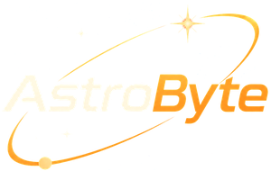
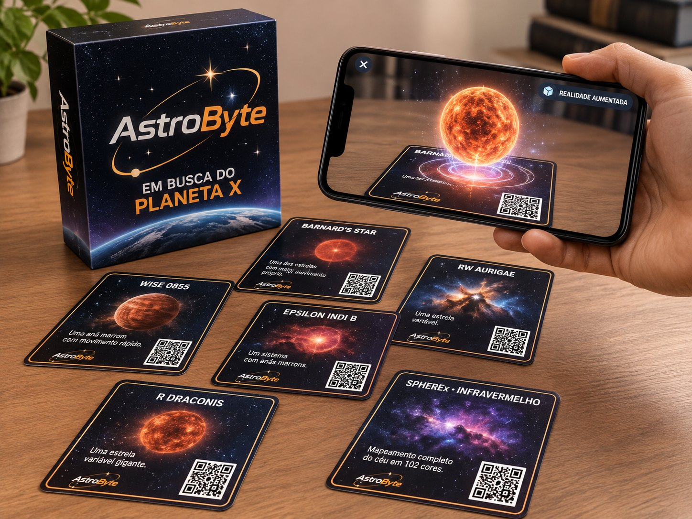

Estrela de Barnard
Uma das estrelas com maior movimento próprio no céu.

Card game com realidade aumentada
Um jogo de cartas em que cada carta ganha vida na câmera do celular. Estrelas, anãs marrons e missões da NASA saltam da mesa em 3D.

Não precisa instalar nada. Só a câmera do celular.
Cada carta traz um objeto real do espaço, com uma frase curta sobre ele.
Aponte a câmera do celular para o código no canto da carta.
O objeto aparece sobre a carta. Gire, chegue perto e descubra os dados.
Objetos de verdade, estudados por telescópios como o SPHEREx e o WISE, da NASA.
Uma das estrelas com maior movimento próprio no céu.
Uma anã marrom fria e muito rápida.
Um sistema com duas anãs marrons.
Uma estrela jovem que muda de brilho.
Uma gigante vermelha variável.
O céu inteiro mapeado em 102 cores.
Prévia das artes. O visual final das cartas pode mudar.
Diversão na mesa, ciência de verdade no celular.
Cada carta fala de um objeto que existe e é estudado por cientistas.
Funciona no navegador do Android e do iPhone.
Bom para a escola, para a família e para quem ama o espaço.
Criado pela equipe AstroByte para o NASA Space Apps Challenge.
Garanta o seu jogo quando abrirmos as vendas. Mande um e-mail ou fale com a gente pelo Instagram.
Preço em breveReserve agora e avisamos você primeiro.
Não. O QR Code abre uma página no navegador, e a realidade aumentada funciona direto por ela.
Funciona na maioria dos celulares recentes: no Android pelo Chrome e no iPhone pelo Safari.
Sim, para abrir a página de realidade aumentada de cada carta.
Por enquanto estamos em pré-venda. Mande um e-mail para astrobyte.nasa@gmail.com ou uma mensagem no Instagram.